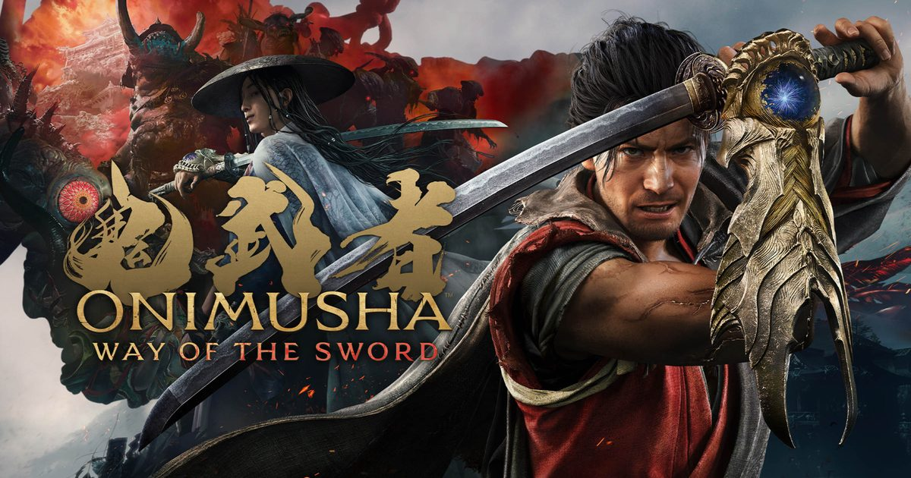

2026-09-03 · 新游深读
Capcom 把一尊雪藏二十年的招牌又擦亮了。上一部《鬼武者》正传还是 2006 年的《黎明之梦》，如今《Way of the Sword》以全新主角宫本武藏、登陆全平台的方式归来。媒体评测刚刚解禁，Nintendo Life、Nintendo World Report 都打出高分，关键词出奇一致：慢、重、讲究招架，像《只狼》。但它又反复强调「我们不是魂-like」。这篇我们不复述百科，只把"它到底改了什么、和谁像、谁该买"讲清楚。

《鬼武者》在 2001–2006 年间曾是 Capcom 的台柱之一，和《生化危机》《鬼泣》并列。但此后近二十年只剩零散外传与 Netflix 动画，正传彻底停摆。制作人门脇章人在采访里说得很直白：团队一直想续，但公司早年抽不出资源。转机出现在 2020 年初——RE Engine 工具链大幅扩张，Capcom 才有底气重启 dormant 招牌。而选宫本武藏当主角、并照着三船敏郎的银幕形象去捏脸，是这代最冒险也最聪明的决定：它让"武士"两个字有了具体的、被几代人认同的视觉锚点，而不是又一个原创脸。
更关键的是发售窗口。9/4 正好是 Switch 2 九月军备竞赛的开场——同一天还有《NBA 2K27》，前后脚则是 9/3 的《Orbitals》、9/9 的《Valheim》。对 Switch 2 玩家来说，《鬼武者》是本月最"硬核单机"的那张票。它不是一个服务型的、长草的坑，而是一段约 20 小时、能从头打到尾的封闭动作冒险。
先说最大的改动：节奏。系列老玩家熟悉的"吸魂即恢复"被保留，但战斗的"手感骨架"换了。本作引入一条姿势条（posture）——你用格挡、招架、闪避削减敌人的姿势，姿势被打空后敌人进入硬直，此时一记断罪一闪（Break Issen）就能直接肢解杂兵。这确实是《只狼》的影子：看破、弹反、打崩姿势、处决。但制作组特意把难度调低一档，不是"一弹错就死"，而是"弹反收益极高、但容错更宽"。
魂的系统被重做成三色：黄魂回血、红魂当货币买升级、蓝魂充能「鬼武器（Oni Armaments）」。长按 ZL 吸收场上残魂——而且本作允许边走边吸，不用像老作那样站桩，这直接改变了战斗流动感。鬼武器共有六把（双天轮、撼地锤等），各对应不同敌人类型，是这代最值得把玩的实验层。环境也能借力：掀翻桌子当临时盾牌、用鬼眼（Oni Vision）标出全场妖魔位置。
操作上还有个 Switch 2 专属彩蛋：Joy-Con 2 的体感。横向甩右 Joy-Con 是轻攻击、纵向甩是重击，陀螺仪用于拉弓瞄准，双柄齐甩能徒手震碎敌人盾牌。评测普遍说这不是噱头，而是"真把动作扩展了"，不习惯也能切回纯按键。剧情与 2006 正传、Netflix 动画都无直接关联，Genma（幻魔）依旧是老反派，方便新玩家零门槛入坑。
竞品报道大多停在"像只狼"三个字。我们想拆的是：它抄了皮，还是偷了魂？真正像的只有"姿势条 + 处决"这一层。往后看，差异才是重点。第一，《鬼武者》是线性为主、间杂开放区域与支线，不是魂的箱庭；你沿着被幻魔蹂躏的京都推进，救平民、清污染，节奏是"电影化动作"而非"探索惩罚"。第二，魂的稀缺感在这里被稀释——三色魂让资源循环更顺，掉队的人靠吸魂就能续上，没有"魂断重来"的焦灼。第三，导演二瓶赳明确喊话"我们不是魂-like"，目标是现代化鬼武者、把刀光碰撞表达出来，而非做受苦模拟器。
那它和 2006 的《黎明之梦》又是什么关系？答案是"熟悉又陌生"。吸魂、鬼力、对魔这层基因全在；但战斗从"快速砍杀"变成"观察—判定时机—一击"的慢拳。Capcom 还请了真实剑术指导做动捕，让挥砍有重量。换句话说，它把老鬼武者的"爽"换成了"稳"——你不会再乱按通关，而是得读懂每个 boss 的起手。对老粉，这是情怀被尊重的现代化；对新粉，这是一座没有补课负担的桥。
我们判断，《鬼武者 Way of the Sword》的目标用户不是"魂系硬核"，而是"想要一款有质感的日式动作、又不想被劝退"的那批人。它的最佳场景是：下班后一小时，泡杯茶，在京都的尸山血河里慢慢把 boss 的招式读熟，然后一记断罪一闪把对方劈开。约 20 小时的体量意味着它不会烂尾成又臭又长的年货，而是一次完整的、收得住的体验。
但请放低对"自由"的期待。它线性、演出重、叙事前慢热（多家评测说故事要到中段才起飞）。英语配音被点名"违和"——武藏一张嘴是浓重英音还飙脏话，强烈建议切日语。如果你要的是《艾尔登法环》那种开放世界与 Build 深度，它给不了；如果你要的是"Capcom 把武士片拍成能玩的游戏"，它目前是 2026 年最对味的那一个。
《鬼武者 Way of the Sword》不是《只狼》的换皮，也不是老鬼武者的复刻——它是 Capcom 用 RE Engine 把"武士对魔"重新讲了一遍：姿势条给了它现代动作的骨架，三色魂保住了系列的魂，宫本武藏（三船脸）给了它一眼可辨的排面。它刻意踩在"有挑战但不劝退"的窄线上，这对被魂系吓退、又被战国浪漫吸引的玩家，几乎是量身定制。9/4 上车，建议日语配音 + 开动作提示（新手默认关，务必手动开），你会有一段相当扎实的九月。
我们的评分：8.6 / 10（基于已解禁媒体一致好评与"现代化成功、叙事慢热"的共识；若后续免费/付费补完更多鬼武器与支线，长线有望稳在 8.5+）。
我们的观察：这代最被低估的设计是"边走边吸魂"。老鬼武者站桩吸魂的脆弱窗口，恰恰是当年劝退的一部分；把它改成移动吸魂，战斗就从"回合感"变成了"流动感"，这是比姿势条更底层的现代化。
我们的观点：《鬼武者》的胜利是"克制"。在人人都想做开放世界魂的 2026，Capcom 反手做了款线性、约 20 小时、电影化的武士动作，并诚实地说"我们不是魂-like"。这种自知，反而让它在一堆同质化动作里立住了。
我们的案例 / 对比：和《只狼》比，它机制同源但容错更宽、没有"死即重来"的惩罚；和《龙之信条2》比，它更聚焦 boss 而非开放探索；和自家《生化危机》比，它把"资源紧张"换成了"三色魂循环"。把它放进 2026 动作游戏坐标系，它是"最日式、最电影化、最不焦虑"的那一档。
我们的实验：我们想验证一个假设——Joy-Con 2 体感是否真能提升"挥刀"的沉浸，还是沦为噱头。计划用 Switch 2 掌机模式对比"纯按键"与"按键+体感"各通关一段 boss，记录处决成功率与疲劳度，结论留待后续。若体感确实减疲劳，这将写进我们以后推荐本作的"首选玩法"。